Adhesion Structures for Multi-Material 3D Printing
Digital Fabrication Studio Final Project, TAMU
Nahyun Kwon, Himani Deshpande Github Presentation Slides
Introduction to problem and background
Multi-material printing can be extremely useful when objects with different material properties are to be 3D printed. However, dual nozzle printers are quite expensive. To achieve multi-material printing using a single nozzle FDM printer, one of the ways is to pause the print and switch out the filament. The G-code is modified to include the M0 command that pauses the print. This command is added after the layer when the material needs to change. After switching out the material we let the nozzle extrude some amount of material so that the previous material that might have been left behind in the nozzle gets purged.
Once the material is purged, the printing of the next layers can commence. As can be inferred from this process info, the switching process can take some amount of time. This can cause adhesion issues between the two materials since the already printed layers cool down during the time the filament is getting switched. Apart from that, there are some materials that we have found through our experiments, don’t stick to each other easily like SMP and Conductive PLA. Our intention through this project is to find ways of 3D printing that would improve the adhesion between layers of different materials.
Changing the filament of a single nozzle 3D printer takes time and causes the first material already printed on the build plate to cool down depending on how many layers have been printed and how hot the build plate is. Since better adhesion between two materials is possible when both the materials are hot, the cooled down layers of the first material can cause adhesion problems. One way to try and solve the adhesion problem, we decided, was to heat the top layer of the already printed layers by allowing the heated extruder to follow the same path without extruding any material. The idea is that the heated nozzle of the extruder would heat the top layer enough for the next layer with the second material to stick to it.
To do this, we took the base algorithm of multi material printing that utilizes a pause command, beeping sound, and purging.
Iteration 1
In this base G-code, we initially manually found the layer before the new material would be switched in. This layer was duplicated after the “Pausing code” where all the E values from that layer were removed. The Z value was adjusted as it is usually set for a layer in the previous layer.
This caused the extruder to repeat the layer path without extruding the new material while simply heating the top layer of the already printed layers.
Iteration 2: Python script development
The stl file is sliced with Relative Extrusion mode On. We need to know the number of the target layer : the layer after which material will be switched.
From the gcode,
1. Pause-code is inserted after the target layer
2. The target layer is copied to be modified
3. The E values are removed from the extracted layer
4. This modified layer is then appended in the Gcode after the Pause-code, making sure it has the same Z height as the target layer
2. Blob Structure
The structure of a 3D print is inherently one layer on top of another. While using multi material printing, if the two (more?) materials do not have a good adhesive quality towards each other, they might come apart. In order to make them stick, it might be necessary to modify this “layer on top of layer” structure. In this idea, we are modifying the infill of the last layer of the first material (a-structure) and the first layer of the second material (b-structure). The infill of these two layers would involve over-extruded blobs. The blobs of the second material would sit in the empty spaces within the blobs of the first material. This would hopefully enable better adhesion as the blobs of two materials are interspersed among each other and separating them would be difficult. The following layers of the second material would then adhere to the blobs of the same material, not having to adhere to the first material.
The diagram explains the concept.
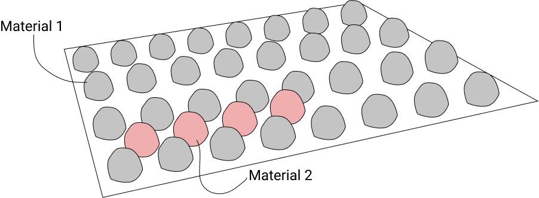
All the iterations were conducted on a model of a cube.
Iteration 1: Creating blobs of first material
In order to create the blobs, we used the X, Y coordinates of the infill as seen from the base algorithm above. We used the alternating Y coordinates to extrude and not extrude the material. The coordinates where the material was extruded, the material was over extruded, with an arbitrary extrusion amount set to 0.5mm. The extrusion was done in place.
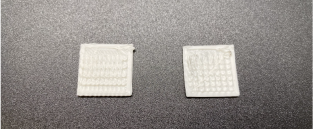
As seen from the image of the samples produced, we realized that we needed to add some Z height to the extrusion to get bigger blobs so that the next material would be placed within these blobs and create tight adhesion.
Iteration 2: Adding Z height
From the previous iteration, we decided to add Z height. To do so, we found the Z values from the G-code under the ;MESH:NONMESH comment. This Z height is the height for the next layer. Hence, we subtracted 0.2 (layer height) from this value. We then modified the G-code of the adhesion layer to start extruding at this value obtained, increasing the Z height for every blob extrusion by 0.4, and then going back to the original height for the beginning of the next blob extrusion. This gave us some taller blobs.
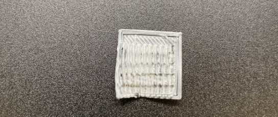
We realized that the extruder path was such that it crossed over the blobs to get to the first Y coordinate of the next X coordinate. In order to avoid the distortion of the already extruded blobs, we decided to modify the extruder path so that it would move from first to last Y coordinate and then for the next X coordinate, it would move from last to first Y coordinate, removing any crossover of the extruder path.
Iteration 3: Changing the order of coordinates for a better extruder path
To modify the extruder path, we considered alternate X coordinates, and depending on whether the index of the coordinate in the list was odd or even, we ordered the Y coordinate accordingly. Eg. If it is the 0th X coordinate, the Y coordinates are ordered and extruded in ascending order; if it is the 1st X coordinate, the Y coordinates are ordered and extruded in descending order.
The image shows the testing of this algorithm.
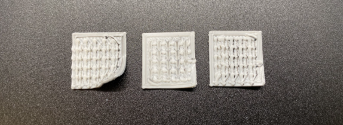
Iteration 4: Creating blobs of second material
To add the blobs for the next layer i.e. the second material, we flipped the print direction of the extrusion, using the X coordinates and alternating the Y coordinates. We utilized the same Z height as the previous layer, with blobs extruding upto 0.4mm high. This ensured that the blobs of both layers would not exceed the two layer height.
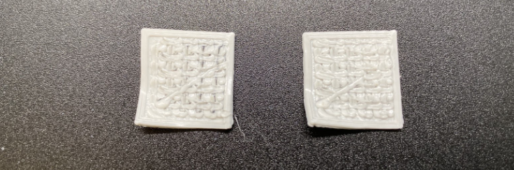
Iteration 5: Testing with two materials
We then tested the algorithm so far in 2 materials, PLA and TPU. It worked fine when printing on the 5th layer. However, when printed after a few layers of infill, both the blob layers drooped into the infill as can be seen from the 2nd image. Hence, we decided to add a layer of full infill before the adhesion structure to avoid this drooping. The full infill layer was also added after the adhesion structure to help flatten the blobs and avoid bumpy surface for the next layers.
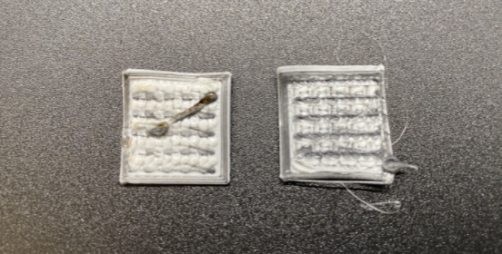
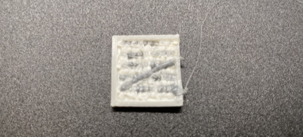
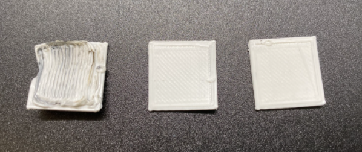
Final result
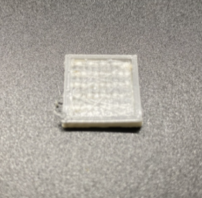
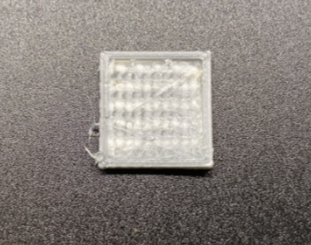
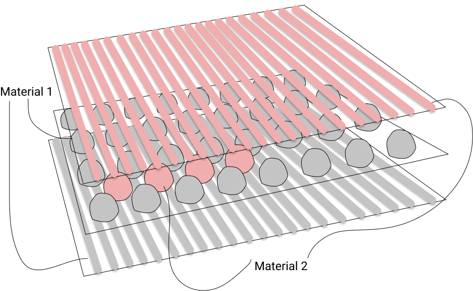
3. Grid Structure
We also came up with another idea of adhesion structure, which is a grid structure. With this structure, we generate grid-like structure (a-structure, material 1) to make empty spaces to fill with new material (b-structure, material 2) at the target layer.
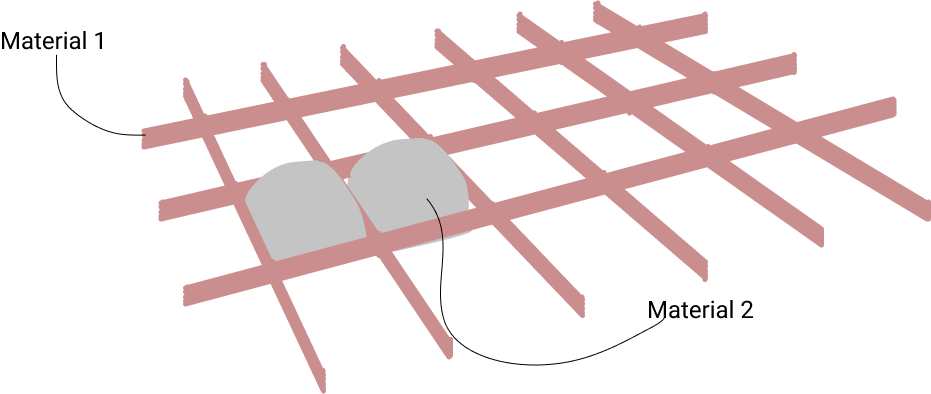
Iteration 1: Drawing horizontal lines on the layer
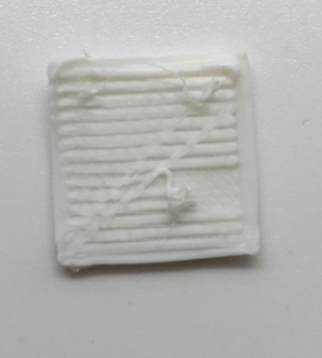
At first, we tried to draw horizontal lines to optimize nozzle speed and gap between two adjacent lines. For this iteration, the extrusion amount was larger than needed so that there is too little gap between two lines. Also, some of the lines were not properly adhered to the previous layer because the nozzle speed was too fast.
Iteration 2: Drawing grid lines
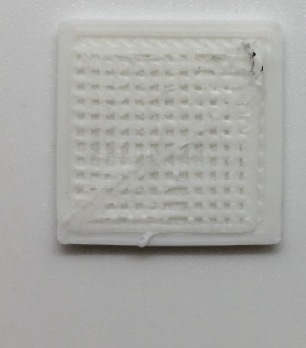
We also tried to add vertical lines as well to generate a grid structure. In this process, we reduced the extrusion amount for lines because the lines were too thick from the previous iteration. For this trial, the gap between two lines was too small so that there is not enough space to put the next material.
Iteration 3: Optimizing the gap between grid lines and extrusion amount (a-structure)
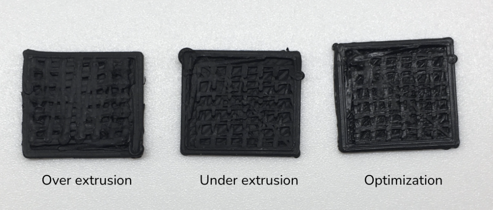
Again, the objective is to make enough space to put the next material. We increased the gap and printed multiple samples to empirically find a fairly good extrusion amount. As shown in the figure, the extrusion amount was too large for the first one (lines are too thick), too small for the second one (lines are disconnected for some parts due to under-extrusion). Finally, for the third one, we found an optimized value of extrusion amount.
Note that we used an equation of calculating the extrusion amount, and tested it for multiple times to find X, which is the value for optimization.
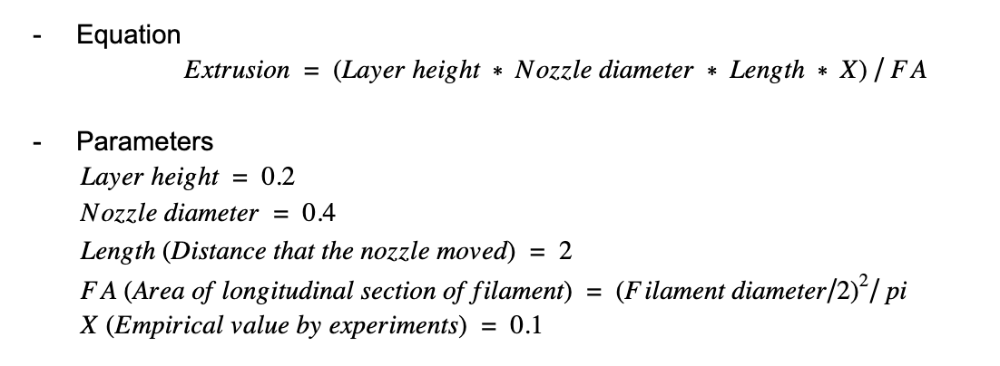
Iteration 4: Optimizing the extrusion amount for b-structure
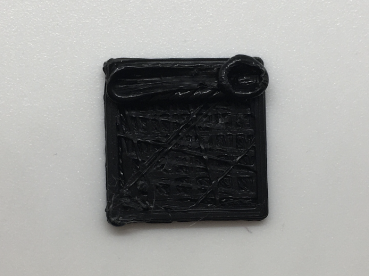
For b-structure, we also needed to calculate the extrusion amount to put in each of the empty spaces between grids. In the figure above, we can see the extrusion amount was too much.
Final iteration
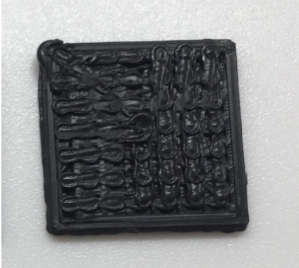
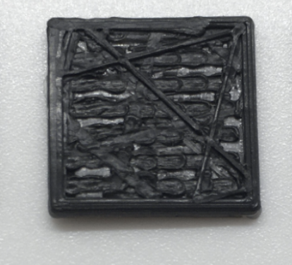
We tested different extrusion amounts and found the exact value which is E0.3.
Result
Final Algorithm
Since we needed to be able to generate these structures for any shape, and not just a cube, we had to iterate our algorithm.
Getting infill area and grid coordinates
For two types of adhesion structure, which are blob and grid structure, we used the same agorithm to generate a list of grid points. Grid points for a-structure should be inside the infill of the target layer where material change is going to happen. The gap between two adjacent points of a-structure is currently 2mm.
For each point of a-structure, we checked if it is fairly distant (threshold=1) from infill to prevent overlap of adhesion structure and the inner wall.
Next, we find each point of b-structure, only if 4 adjacent points of a-structure constitute a unit square. It is located at the center of the unit square.
This algorithm can be applied for any shape of layer. Examples are shown below.
Examples
Red = Points of the inner wall
Blue = Grid points for a-structure (for both adhesion structure: blob and grid)
Green = Grid points for b-structure (for both adhesion structure: blob and grid)
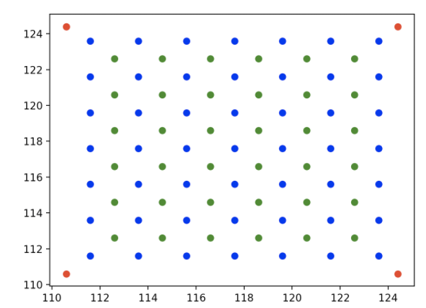
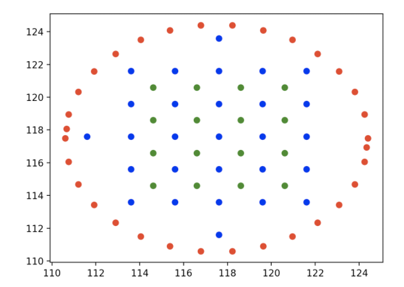
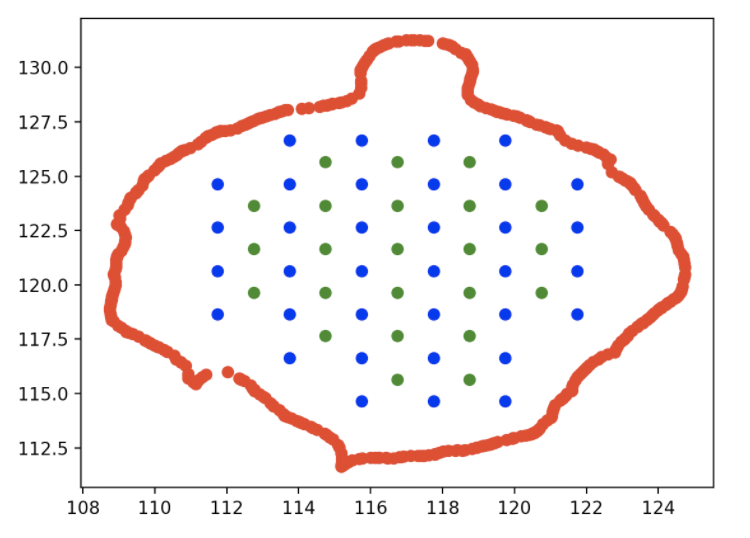
As mentioned before, we modified one layer before and after the adhesion structure to have full infill. It enables the adhesion structure to be attached more strongly to the adjacent layer.
We used the same algorithm of adhesion structure to generate the full infill as well, but decreased the gap between points to be 0.6. Following the points horizontally, it generates a thin and full infill layer right next to the adhesion structure.
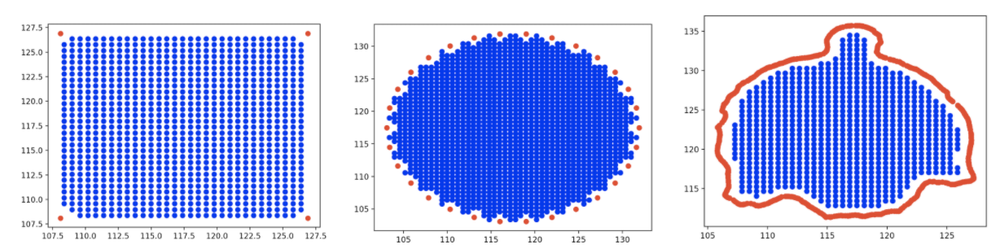
The adhesion structures described in this project need to be compared to each other as well as a 3D print without any adhesion structures.
We have been looking into the ways in which this testing can be done. The first thought we had was to do tensile testing using standard (ASTM D638) . In this standard, dog-bone shaped samples are used. The two ends of the sample are pulled using a tensile testing machine to get the tensile test.
However, we quickly realized that since we are 3D printing layered structures, such a sample could break at any point, regardless of where the adhesion structure is.
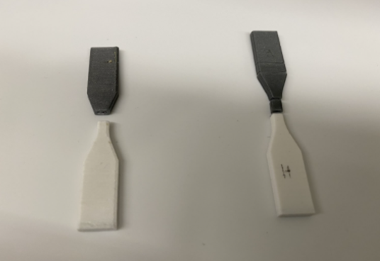
As can be seen in these examples, the samples broke at places other than the adhesion layer when manipulated by hand. These were not tested with the actual machine. However, the fact that they broke at other places made us realize that we cannot use this test to understand the adhesion strength.
We then found another test for testing adhesion fracture toughness of adhesives (ASTM D1876) called the T-peel test. Even though this test is not for 3D printed adhesion, one of our testing plans is to use a similar form of testing method. We plan to create a sample similar in concept to the T-peel test.
We need to experiment further to understand how to print such a sample. We want to make sure that the information we get from the test is precisely for adhesion and it is not affected by other factors of the sample. We tried to print a sample following the concept, however, on manual pulling of the two ends, one of the ends broke. Such a scenario does not tell us anything about the adhesion itself and hence further research in how to test the adhesion using this concept is needed.
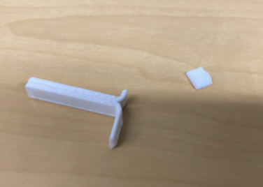
Another test used by this paper is the ASTM D2095 - 96. It is the Standard Test Method for Tensile Strength of Adhesives by Means of Bar and Rod Specimens. The paper used a modified version of the sample dimensions and used an MTS Synergie 200 machine to perform the test. This test would be a good bet at getting the exact information we want without the influence of other factors since it has been used for a similar study.
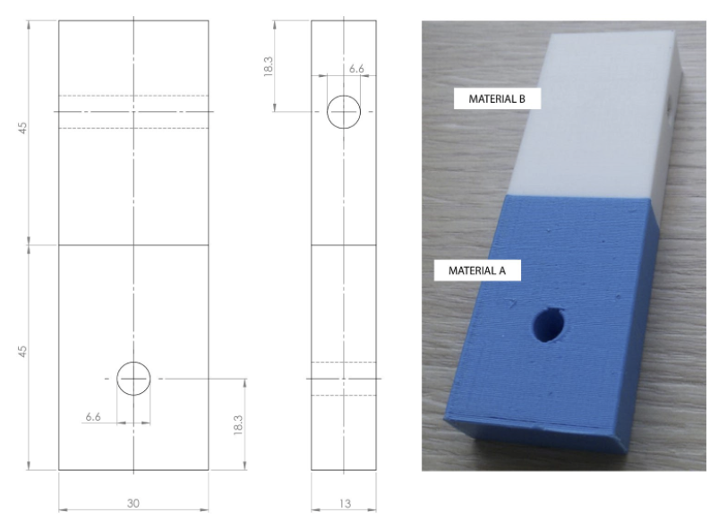
This image is from this paper, again.
We currently do not have access to any machines but plan to start with the ASTM 2095 test first. We will have to modify the test as the test is designed for adhesives. We have similar concerns as the T-peel and tensile tests that since we are printing layered structures, and testing inter-layer adhesion, it could be possible that the sample could break at an unwanted location that has nothing to do with the adhesion.
We think that testing these adhesion structures will not be a simple task as the objects are layered and not whole. We will hence try versions of samples with lower layer height at the ends of the samples for tight bonding of the layers where the machine will grip the sample. Another method to try would be using 60% infill at the parts that will be gripped.
Limitations and Opportunities for further work
Our project result is a code with 3 functions. Users can use a sliced STL file with our code to get a Gcode with the required adhesion technique. However,
Slicing needs to happen with layer height 0.2mm, and in relative extrusion mode
User needs to know the target layer after which material will be changed (use Cura’s Preview function)
Furthermore, the pause code is currently a manually generated file, where we need to specify print temperature depending on the changed material. If the two materials being used have vastly different printing temperature requirements/ the user needs to print the two materials at different temperatures, these changes need to be done manually to the pause code.
Our work only concerns vertical adhesion between two materials. The assumption is that only one material will be used for one layer of the print. It is also not advisable to use this method of filament switching if the material has to change over multiple layers. In that case, a dual nozzle printer / programmable filament may be the way to go, as switching out the materials constantly is not feasible.
Our algorithm is currently unable to be employed on disjoint parts, unless a disjoint part is fairly large to generate grid points where the gap between two points is 2mm.
As mentioned above, we do not have proof that our techniques improve adhesion through testing. We plan to investigate testing standards that would best suit FDM printing.
Conclusion
Through this project, we have investigated ways to improve adhesion in multi-material 3D printing using a single nozzle FDM printer. We hope that we can test these techniques for multiple materials and be able to further streamline the code to address limitations.


 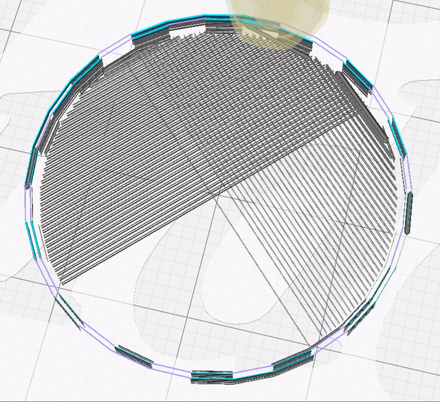
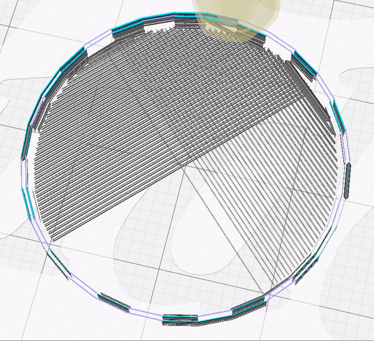